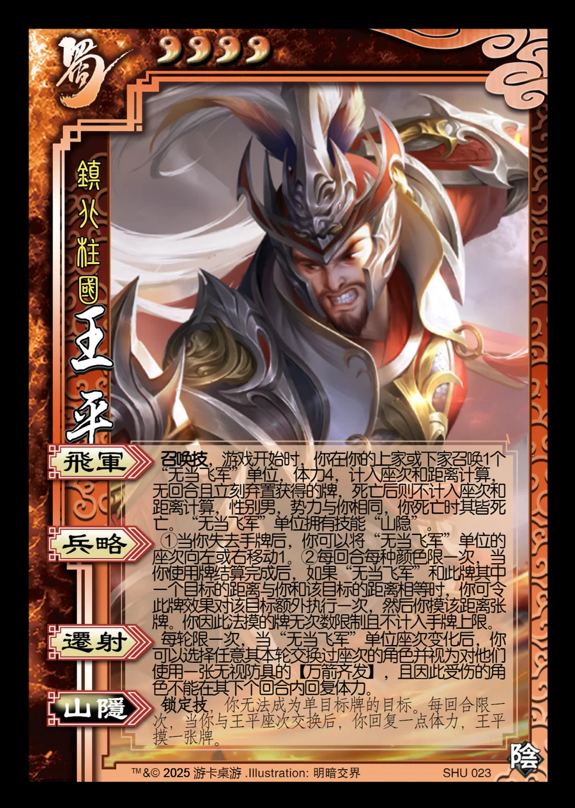

点击卡面查看大图
蜀
军王平
♥4镇北柱国
飞军召唤技
召唤技，游戏开始时，你在你的上家或下家召唤1个“无当飞军”单位，体力4，计入座次和距离计算，无回合且立刻弃置获得的牌，死亡后则不计入座次和距离计算，性别男，势力与你相同，你死亡时其皆死亡。“无当飞军”单位拥有技能“山隐”。
兵略
①当你失去手牌后，你可以将“无当飞军”单位的座次向左或右移动1。②每回合每种颜色限一次，当你使用牌结算完成后，如果“无当飞军”和此牌其中一个目标的距离与你和该目标的距离相等时，你可令此牌效果对该目标额外执行一次，然后你摸该距离张牌。你因此法摸的牌无次数限制且不计入手牌上限。
迁射
每轮限一次，当“无当飞军”单位座次变化后，你可以选择任意其本轮交换过座次的角色并视为对他们使用一张无视防具的【万箭齐发】，且因此受伤的角色不能在其下个回合内回复体力。
山隐锁定技衍生
锁定技，你无法成为单目标牌的目标。每回合限一次，当你与王平座次交换后，你回复一点体力，王平摸一张牌。